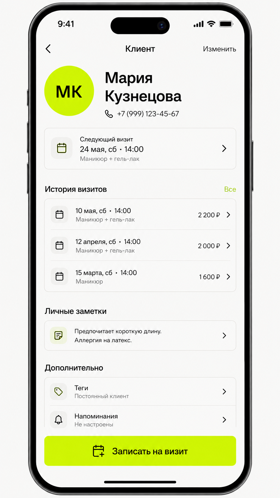

Онлайн-запись для клиентов 24/7
Приложение для записи клиентов.
Без хаоса в расписании.
Программа для записи клиентов, CRM, календарь и клиентская база — в одной экосистеме для специалистов и их клиентов.
Мария10:00 · Елена
Консультация 13:00 · Дмитрий
Консультация
Алексей11:00 · Игорь
Тренировка 14:00 · Наталья
Тренировка
Анна09:30 · Светлана
Консультация 13:00 · Андрей
Консультация
Календарь записиБаза клиентовОнлайн-запись 24/7История визитовНапоминанияКалендарь записиБаза клиентовОнлайн-запись 24/7История визитовНапоминания
CRM для мастера и команды
Календарь для записи клиентов
и клиентская база
Luna CRM — приложение для ведения записи клиентов: календарь, карточки клиентов, история визитов, услуги и сообщения. Частному специалисту и небольшой команде не приходится переключаться между разными сервисами.
КалендарьСегодня
09:00
Консультация с Еленой 09:00-10:00
11:30Созвон с Игорем 11:30-12:00
14:00Новая запись 14:00-15:00
Не переключайтесь между сервисами
Запись становится частью клиентской истории, а не отдельной задачей.
Клиенты
- АСАнна СмирноваВстреча сегодня в 10:00активный
- ИПИгорь ПетровСозвон сегодня в 11:30активный
- МКМария КузнецоваОбновление сегодняв работе
Запись 24/7
Запись работает,
даже когда вы заняты
Система онлайн-записи клиентов работает без звонков и переписки: клиент самостоятельно выбирает услугу и свободное время. Новая запись сразу появляется в календаре и связывается с клиентской карточкой.
Онлайн-консультация60 минут
20 мая13:00 · КонсультацияЗапись подтверждена
Для бизнеса по записи
Подходит тем, кто
работает с клиентами
Сервис онлайн-записи помогает частным мастерам и небольшим командам держать расписание, услуги и контакты клиентов в понятном порядке.
Частным специалистам
Приложение для записи клиентов для частного мастера, самозанятого, консультанта или тренера: календарь занятости, учет клиентов и история визитов всегда под рукой.
Салонам и студиям
Luna CRM подойдёт как приложение для записи клиентов в салон красоты, барбершоп или небольшую студию: онлайн-запись, услуги, специалисты и свободное время собраны вместе.
Сервисным командам
Запись клиентов на тренировки, консультации и услуги — для образовательных центров, фитнес-клубов, автосервисов и других команд с предварительным бронированием.
Приложение для клиентов
Запись на услуги
в Luna Clients
Скачайте бесплатное приложение для онлайн-записи клиентов Luna Clients на iPhone и iPad: находите свободное время, записывайтесь к специалистам без звонков и управляйте предстоящими визитами.
- ЗаписьДоступное время 24/7
- ВизитыИстория и напоминания
- УправлениеПеренос и отмена записи
Веб-версия готовится. Основные возможности уже доступны в приложении.

Следующий визит24 мая, 14:00Напоминание включено
Вопросы по делу
Спокойный сервис
начинается здесь
Luna связывает работу специалиста и путь клиента: от выбора услуги и времени до календаря, карточки клиента и следующего визита.
Чем отличаются Luna CRM и Luna Clients?
Luna CRM — рабочее приложение для специалистов и команд: календарь, клиентская база и записи. Luna Clients — приложение для клиентов, где можно выбрать услугу и время, посмотреть историю и управлять визитом.
Кому подходит CRM для записи клиентов?
Самостоятельным специалистам и небольшим командам в сфере услуг, которым нужен единый календарь записи, база клиентов и история визитов.
Как работает онлайн-запись клиентов?
Клиент открывает страницу записи, выбирает услугу и доступное время. Запись появляется в календаре специалиста и связывается с карточкой клиента.
Есть ли приложение для записи клиентов для мастера?
Да. Luna CRM — приложение для мастера или небольшой команды: в нём собраны календарь для записи клиентов, карточки клиентов, услуги и сообщения.
Luna подходит как программа для записи клиентов?
Да. Luna объединяет онлайн-запись, рабочий календарь и клиентскую базу. Для работы специалиста предназначена Luna CRM, а для самостоятельной записи клиента — Luna Clients.
Можно ли вести базу клиентов и историю визитов?
Да. Запись связана с карточкой клиента, поэтому контакты и история посещений не теряются между календарём и перепиской.
На каких устройствах доступна Luna Clients?
Luna Clients бесплатно доступна в App Store для iPhone и iPad. Требуется iOS 15.1 или iPadOS 15.1 либо более новая версия.
Есть ли веб-версия Luna?
Веб-версия готовится. Основные возможности уже доступны в приложениях Luna CRM и Luna Clients для iPhone и iPad.